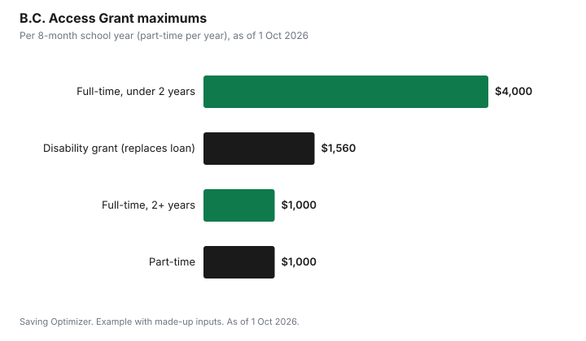

Education · Canada
StudentAid BC 2026-27: Grants, Loans and the B.C. Access Grant
For 2026-27, one StudentAid BC application assesses you for both federal and B.C. aid. You get grants first: the federal Canada Student Grant for full-time students, up to $525 a month of study, and the B.C. Access Grant, up to $4,000 a year if your undergraduate program is under two years or $1,000 if it is two years or longer. The rest of your assessed need is covered by Canada-B.C. integrated loans, which StudentAid BC says are interest-free and are repaid as one loan through the National Student Loans Service Centre, starting on the first day of the seventh month after your studies end.
Key takeaways
- One application for federal and B.C. aid; Canada-B.C. loans are administered as one loan.
- B.C. and Canada student loans are interest-free, according to StudentAid BC.
- B.C. Access Grant: up to $4,000 (programs under 2 years) or $1,000 (2+ years) per 8-month year.
- Part-time students can get up to $1,000 a year from the B.C. Access Grant.
- Federal full-time grant: up to $525 a month for 2026-27; federal weekly loan limit $300.
- Example with made-up inputs: a one-year certificate student gets $8,200 in grants.
Who can apply
StudentAid BC says full-time students must be enrolled in at least 60% of a full course load, or 40% for students with a permanent, or persistent or prolonged, disability. Part-time aid requires B.C. residency, which StudentAid BC defines as B.C. being the province where you last lived for 12 continuous months as of your study start date, not counting months of full-time post-secondary study, with an exception for permanent residents and protected persons who have recently arrived. If you are approved for full-time funding, you must agree to the Master Student Financial Assistance Agreement, which StudentAid BC describes as a legal contract with both governments.
The B.C. Access Grant
The B.C. Access Grant is non-repayable and paid up front to low- and middle-income undergraduates at B.C. public post-secondary institutions. Master's, PhD and unclassified students are not eligible. You are assessed automatically when you apply, as long as you qualify for full-time aid and have at least $1 of assessed provincial need. You can receive it in each year of your undergraduate studies as long as you still qualify.
| Study type | Maximum | Per week of study |
|---|---|---|
| Full-time, program under 2 years | Up to $4,000 per 8-month school year | Up to $117.65 |
| Full-time, program 2+ years | Up to $1,000 per 8-month school year | Up to $29.41 |
| Part-time | Up to $1,000 a year | Not stated |
The grant shrinks as gross family income rises and stops at the cut-off for your family size. StudentAid BC publishes the income below which you get the maximum, the same as the federal thresholds, and the income at or above which you get nothing.
| Family size | Full-time, under 2 years | Full-time, 2+ years | Part-time |
|---|---|---|---|
| 1 | $80,491 | $48,978 | $55,981 |
| 2 | $112,552 | $68,947 | $78,637 |
| 3 | $134,209 | $83,533 | $94,794 |
| 4 | $147,375 | $94,558 | $106,295 |
| 5 | $159,562 | $104,415 | $116,670 |
| 6 | $171,168 | $113,476 | $126,296 |
| 7 or more | $181,162 | $121,638 | $134,866 |
Payment follows your study period. StudentAid BC says that if your study period is 17 weeks or less, you receive 100% of the grant at the start; if longer, you receive half at the start and half at the midpoint. Funds arrive by electronic transfer through the National Student Loans Service Centre.
Federal grants and loans in your package
The federal amounts for 2026-27 come from the Canada Gazette amendment SOR/2026-139, in force 1 August 2026. It keeps the Canada Student Grant for Full-Time Students at a maximum of $525 for each month of study, the part-time grant at $2,520, the grant for students with disabilities at $2,800 and the full-time dependants grant at $280 per dependant per month, and it sets the federal weekly loan limit for full-time students at $300 from 1 August 2026 to 31 July 2027. See Canada Student Grant 2026-27 for the federal income thresholds.
| Program | 2026-27 maximum |
|---|---|
| Canada Student Grant, full-time | $525 per month of study |
| Canada Student Grant, part-time | $2,520 for the year |
| Canada Student Grant, students with disabilities | $2,800 for the year |
| Canada Student Grant, full-time with dependants | $280 per dependant per month |
| Canada Student Grant, part-time with dependants | $2,688 for the year |
| Federal full-time loan limit | $300 per week |
Students with disabilities
StudentAid BC lists several programs. The B.C. Access Grant for Students with Disabilities replaces up to $1,560 ($30 per week of study) per program year of B.C. student loan with non-repayable grant, for full-time students at B.C. public schools. The federal Canada Student Grant for Services and Equipment pays up to $20,000 per loan year for items such as tutors, note-takers, interpreters and technical aids. The B.C. Assistance Program for Students with Disabilities can help only after you have used up the federal services and equipment grant, and StudentAid BC lists up to $12,000 where an attendant is required at school. See grants for students with disabilities.
Example with made-up inputs: a one-year certificate
These numbers are an example with made-up inputs. A single student with family income under the federal threshold of $38,474 enrols full-time for 8 months in a one-year certificate at a B.C. public college. Assessed need is $16,000. Grants come to 8 × $525 = $4,200 federal plus $4,000 B.C. Access Grant, $8,200 in total. The remaining $7,800 is covered by Canada-B.C. integrated loans, which are interest-free. If the same student were in a four-year degree instead, the B.C. Access Grant would be up to $1,000, so grants would be $5,200 and loans $10,800.
| Program length | Federal grant | B.C. Access Grant | Loans |
|---|---|---|---|
| One-year certificate | $4,200 | $4,000 | $7,800 |
| Four-year degree | $4,200 | $1,000 | $10,800 |

Repayment
StudentAid BC says you must start repaying on the 1st day of the 7th month after you leave school or drop from full-time to part-time studies. About 45 days before, the NSLSC sends a message telling you to log in, where you can see what you owe, your monthly payment and due date, the repayment length and your bank account. You can cancel a pre-authorized payment plan with 30 days' notice. If payments are hard, see how much you pay on RAP.
B.C. Loan Forgiveness Program
Recent graduates in certain in-demand occupations can have the B.C. portion of their loans forgiven by working at publicly funded facilities in underserved B.C. communities, or with children in shortage occupations. StudentAid BC says the province forgives up to 20% a year for up to five years. Eligible occupations listed include nursing and medical laboratory technologists in underserved communities, and, for work with children, roles such as teachers of the deaf or hard of hearing or the visually impaired. You must be in repayment and meet minimum in-person service hours.
Steps
- Apply online with StudentAid BC as early as you can before your study start date.
- Confirm your program is designated and your course load meets 60% (or 40% with a disability).
- Check the B.C. Access Grant table for your family size and program length.
- If you have a disability, apply for the disability grants at the same time.
- Sign the Master Student Financial Assistance Agreement when approved.
- Watch for the NSLSC message about 45 days before repayment starts.
Sources
- StudentAid BC, Full-time and part-time funding pages, studentaidbc.ca, as of 1 Oct 2026. Integrated loans, interest-free status, course load, residency.
- StudentAid BC, B.C. Access Grant (full-time) and (part-time), studentaidbc.ca, as of 1 Oct 2026. Amounts, income cut-offs, payment timing.
- StudentAid BC, B.C. Access Grant for Students with Disabilities; Canada Student Grant for Services and Equipment; B.C. Assistance Program for Students with Disabilities, studentaidbc.ca, as of 1 Oct 2026.
- StudentAid BC, Repayment and B.C. Loan Forgiveness Program, studentaidbc.ca, as of 1 Oct 2026.
- Canada Gazette Part II, SOR/2026-139, published 1 Jul 2026. 2026-27 federal grant maximums and weekly loan limit.
- Need, income and program length in the example are an example with made-up inputs.
Frequently asked questions
How much is the B.C. Access Grant for 2026-27?
Up to $4,000 per eight-month school year for full-time undergraduate programs under two years, up to $1,000 for programs of two or more years, and up to $1,000 a year for part-time studies, according to StudentAid BC.
Are StudentAid BC loans interest-free?
StudentAid BC says B.C. and Canada student loans are interest-free.
What income is too high for the B.C. Access Grant?
For a single student, the full-time grant stops at $80,491 of family income for programs under two years and $48,978 for programs of two or more years. The part-time grant stops at $55,981.
When do I start repaying a B.C. student loan?
On the 1st day of the 7th month after you leave school or drop to part-time studies. The NSLSC contacts you about 45 days before.
Do I need to apply separately for the B.C. Access Grant?
No. StudentAid BC assesses you automatically when you apply for full-time or part-time aid.
Can B.C. student loans be forgiven?
The B.C. Loan Forgiveness Program forgives up to 20% of the B.C. portion a year for up to five years for eligible occupations in underserved communities or working with children.
Researched and drafted with AI assistance and fact-checked against official Canadian sources. How we create content.
Disclosure: Saving Optimizer may earn a commission if a partner link is added later, such as a student banking offer type. No partnership is claimed on this page. Education only.